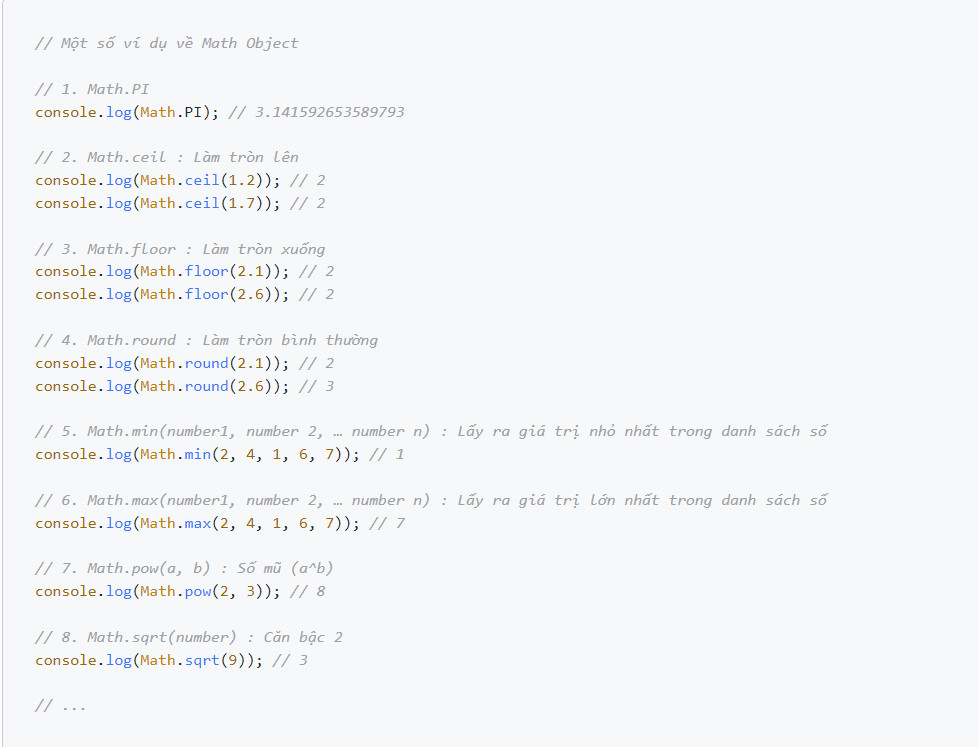
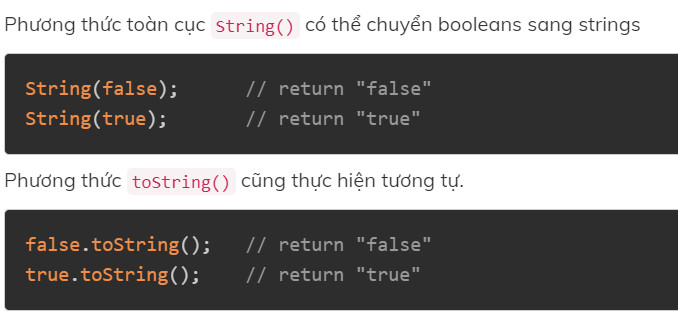
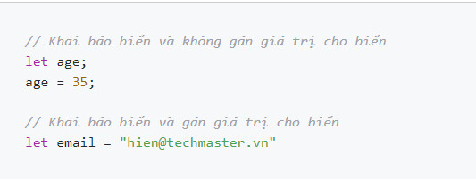

Giới thiệu về ngôn ngữ JavaScript
- Javascript (JS) là một ngôn ngữ kịch bản phía client
- Javascript được sử dụng rộng rãi trong việc kết hợp với HTML/CSS để thiết kế web động.
Javascript là gì?
- Sửa đổi nội dung của một trang web.
- Thay đổi style và vị trí của các thành phần trên trang web.
- Phản hồi với các sự kiện từ người dùng.
- Thực hiện và kiểm soát việc chuyển tiếp các hình ảnh động.
- Thông báo cho người dùng.
- Thao tác với dữ liệu đầu vào và hiển thị kết quả sau khi xử lý.
- Xác thực dữ liệu đầu vào của người dùng trước khi gửi nó đến máy chủ.
Javascript dùng để làm gì?
- Thay đổi nội dung HTML như tìm một phần tử của HTML và dùng để thay đổi nội dung của phần từ (Internal HTML) sang nội dung thuộc Javascript.
-
JavaScript còn có thể sử dụng để thay đổi các giá trị của thuộc tính
trên cấu trúc HTML. Ví dụ: thay đổi thuộc tính src (source) của
tag
.
- JS dùng để thiết kế trang web động và một số hiệu ứng hình ảnh thông qua DOM.
- Tại Việt Nam, JavaScript còn được ứng dụng để làm bộ gõ tiếng Việt giống như bộ gõ hiện đang sử dụng trên các trang web.
Demo một số tính năng của Javascript
Cách nhúng mã JavaScript trong trang web
- Tạo file index.html (Cặp thẻ Script ta có thể đặt ở trong cặp thẻ 'head' hoặc 'body')
- Viết mã Javascript in ra dòng chữ “Hello world” trên màn hình console của trình duyệt.
Cách 1 : Dùng cặp thẻ Script để viết js trong cùng HTML
- Tạo file main.js để viết mã Javascript (main.js nằm cùng cấp với index.html)
- Nhúng file main.js vào file index.html thông qua thuộc tính src trong thẻ script
Cách 2: Tạo file có đuôi là .js để viết mã Javascript
Sử dụng Chome DevTool (console)
- Ở đây chúng ta có thể thấy thông báo lỗi màu đỏ.
- Ở bên phải, có một liên kết có thể nhấp vào nguồn bug.html:12 với số dòng nơi xảy ra lỗi.
- Bên dưới thông báo lỗi có biểu tượng > màu xanh lam. Nó đánh dấu một “dòng lệnh” nơi chúng ta có thể gõ các lệnh JavaScript. Nhấn Enter để chạy chúng.
Mở file trên trình duyệt, sau đó Bấm f12 hoặc chuột phải + inspect và vào tab console để xem kết quả

Các kiểu dữ liệu, biểu diễn giá trị trong JavaScript
JavaScript có 8 kiểu dữ liệu cơ bản, trong đó, có 7 kiểu dữ liệu nguyên thủy (boolean, null, undefined, number, BigInt, string, symbol) và 1 kiểu dữ liệu dạng tham chiếu (object).
- Boolean là kiểu dữ liệu logic chỉ bao gồm hai giá trị là true (đúng, chính xác) và false (sai, không chính xác),
Kiểu dữ liệu boolean (kiểu logic)
- Kiểu dữ liệu null là một kiểu dữ liệu đặc biệt, chỉ bao gồm một giá trị là null
Kiểu dữ liệu null
- Cũng tương tự như null, undefined là một kiểu dữ liệu đặc biệt trong JavaScript, chỉ bao gồm một giá trị undefined
- Kiểu dữ liệu undefined có nghĩa là giá trị chưa được gán.
Kiểu dữ liệu undefined
- Kiểu dữ liệu number là kiểu dữ liệu dạng số (tương tự trong toán học). Number trong JavaScript không có cú pháp gì đặc biệt. Bạn chỉ cần viết số ra. JavaScript có hai loại số là: số nguyên và số thực.
- Infinity: là số dương vô cùng. Đây là giá trị đặc biệt và nó lớn hơn bất kỳ số nào khác. Bạn có thể sử dụng giá trị này trực tiếp hoặc thu được nó bằng cách lấy lấy số dương bất kỳ chia cho 0 (toán tử chia trong JavaScript là /).
- -Infinity: là số âm vô cùng. Đây cũng là giá trị đặc biệt và nó nhỏ hơn bất kỳ số nào khác. Bạn có thể sử dụng giá trị này trực tiếp hoặc thu được nó bằng cách lấy lấy số âm bất kỳ chia cho 0.
- NaN: là viết tắt của Not a Number, được sử dụng để đại diện cho những trường hợp tính toán sai hoặc kết quả của một phép tính không xác định.
Kiểu dữ liệu number
Ngoài những loại số trên, JavaScript còn có 3 số đặc biệt là: Infinity, -Infinity và NaN.
- Trong JavaScript, kiểu dữ liệu number không thể biểu diễn một số nguyên lớn hơn (253-1) (bằng 9007199254740991) và nhỏ hơn -(253-1).
- Với hầu hết các trường hợp, việc sử dụng kiểu dữ liệu number là quá đủ. Nhưng đôi khi, bạn vẫn cần biểu diễn và tính toán với những số nguyên cực kỳ lớn. Do đó, kiểu dữ liệu BigInt ra đời nhằm giải quyết vấn đề này.
- Để biểu diễn số nguyên với kiểu BigInt, bạn chỉ cần thêm chữ cái n ở phía sau
Kiểu dữ liệu BigInt
- String là kiểu dữ liệu dùng để biểu diễn chữ, văn bản, đoạn văn bản,...
- Có ba cách để biểu diễn string trong JavaScript:
- Dấu nháy đơn và dấu nháy kép là hoàn toàn giống nhau.
- Riêng với dấu "backtick", bạn có thể sử dụng biến, hằng hoặc thậm chí viết một biểu thức trong đó, với cú pháp ${…}, ví dụ:
Kiểu dữ liệu string
-
Dùng dấu nháy đơn (')
-
Dùng dấu nháy kép (")
-
Dùng dấu "backtick" (`)
- Symbol là một kiểu dữ liệu nguyên thủy dùng để tạo ra các giá trị duy nhất (unique value) và bất biến (immutable). Symbol thường được dùng làm key cho kiểu dữ liệu object
Kiểu dữ liệu symbol
- Object là kiểu dữ liệu tham chiếu. Có thể hiểu object là một tập hợp gồm các cặp key - value (khóa - giá trị). Trong đó, kiểu dữ liệu của key có thể là string hoặc symbol. Và value ứng với key có thể là bất kỳ kiểu dữ liệu nào.
Kiểu dữ liệu object
Toán tử
- Math.PI : Lấy ra giá trị của số PI
- Math.round(number) : Làm tròn số bình thường
- Math.ceil(number) : Làm tròn số lên
- Math.floor(number) : Làm tròn số xuống
- Math.random() : Random 1 số ngẫu nhiên trong khoảng 0 -> 1
- Math.min(number1, number 2, … number n) : Lấy ra giá trị nhỏ nhất trong danh sách số
- Math.max(number1, number 2, … number n) : Lấy ra giá trị lớn nhất trong danh sách số
- Math.pow(a, b) : Số mũ (a^b)
- Math.sqrt(number) : Căn bậc 2
Đối tượng Math trong Javascript sẽ giúp bạn thực hiện các biểu thức đặc biệt trong toán học.
Một số phương thức hay được sử dụng

Chuyển đổi kiểu dữ liệu
- Chuyển đổi Numbers sang Strings
- Chuyển đổi Booleans sang Strings
- Chuyển đổi Dates sang Strings
- Chuyển đổi Strings sang Numbers
Chuyển đổi bằng Javascript function

Tự động chuyển đổi kiểu dữ liệu
Bảng chuyển đổi kiểu dữ liệu trong JavaScript
Biến
- Biến là một định danh dùng để lưu trữ dữ liệu, thông qua biến chúng ta có thể thực hiện các thao tác với dữ liệu.
- Mỗi biến có một kiểu dữ liệu riêng, dựa vào kiểu dữ liệu của biến có các thao tác khác nhau với biến.
- Khai báo biến và không gán giá trị cho biến: let age;
- Khai báo biến và gán giá trị cho biến: let age = 35;
- Chứa các ký tự chữ, số, _ và $
- Ký tự đầu tiên không được là số (nên là chữ)
- Có phân biệt hoa thường
- Không trùng với các từ khóa của Javascript như: for, while, this, …
- Nên đặt tên theo kiểu camelCase nếu tên biến có độ dài 2 từ trở lên cho dễ đọc. Ví dụ binhphuong thì nên đặt là binhPhuong.
Biến là gì?
Ví dụ
-
Biến kiểu số thì có phép cộng, trừ, nhân, chia.
-
Biến kiểu chuỗi thì có độ dài của chuỗi, phép nối 2 chuỗi, …
Khai báo biến
-
Để khai báo biến sử dụng từ khóa : let / const
-
Sử dụng 2 cách sau để khai báo biến:

Quy tắc đặt tên biến
Kiểm tra kiểu dữ liệu của biến
-
Để kiểm tra kiểu dữ kiệu của 1 biến, chúng ta sử dụng toán tử typeof